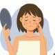

Acne
Rx
1.Gel Metronidazole 0.75% N=1 q12h
2.Cap Tetracycline 250mg N=30 q12h
3.Cream Sunscreen Oil free N=1 PRN
Or
1.Cream Tretinoin 0.05% N=1
2.Gel Erythromycin 2% N=1 q12h
Or Tab Erythromycin 500mg N=60 bd
3.Cream Sunscreen Oil free N=1 PRN
Rx:
1.Gel Clindamycin 1% N=1 q12h
2.Gel Benzoyl peroxide 5% N=1 qd
3.Cream Tretinoin 0.05% N=1 qd
4.Cream Sunscreen Oil free N=1 PRN
Or 1.Metronidazole1gr + Alcohol 70% 100gr q12h
نکته: بروز اکنه به علت رژیم غذایی ، ژنتیک، استرس و استفاده از لوازم ارایشی است
نکته: اکنه روزآسه همراه با اریتم و تلانژکتازی و اتساع عروق خونی است. و معمولا صورت و بینی و پیشانی درگیر میکنه.
نکته: اکنه ولگاریس علاوه بر صورت سینه و پشت هم درگیر میکند. اریتم و تلانژکتازی نداره.
نکته: آکنه باید درمان کنیم تا مانع از تبدیل به فرم های شدید و اسکار بشیم. نکته:در انتخاب درمان به شدت درگیری (خفیف-متوسط-شدید) و سابقه مصرف دارویی و نوع پوست(چرب و خشک) اختلالات هورمونی دقت میکنیم.
نکته:ژل برای پوست های چرب و کرم برای پوست های خشک. (پماد نمیدیم)
نکته:با مصرف ترتینوئین ممکنه پوست دچار تحریک و خشکی شود. درصورت بروز حساسیت ، بصورت یک شب درمیان یا هر ۲شب یکبار استفاده کند. و همیشه از نوع ضعیف(%0.025) شروع میکنیم.
نکته:اگر بیمار به بنزوئیل پروکساید حساسیت نشون داد (بهتره از نوع 5% استفاده بشه ) میتونین ترتینوئین تجویز کنید.
نکته:درصورت تجویز همزمان بنزوئیل پروکساید و ترتینوئین توصیه کنید بنزوئیل پروکساید صبح ها و ترتینوئین شب ها استفاده کند.
نکته:اگر بیمار به بنزوئیل پروکساید حساسیت نشون داد میتونین ترتینوئین تجویز کنید.
نکته:درصورت فرم های متوسط و شدید آکنه میتونین نوع خوراکی آنتی بیوتیک تجویز کنید.
نکته: درموارد خیلی شدید ترتینوئین خوراکی (راکوتان) تجویز میشود.(ارجاع مدنظر داشته باشید.)
نکته: باتوجه به آسیب پذیری پوست،بیمار باید از ضد افتاب استفاده کند. نکته: گاهی برای آکنه ها علت هورمونی مطرح هست. که ازمایشات زیر درخواست میکنیم: FSH ,LH ,DHEAS , Testosterone ,Prolactin , 17Hydroxy Progesterone
1️⃣ فولیکولیت
2️⃣ درماتیت
Rosacea 3️⃣
Sebaceous Hyperplasia 4️⃣
Syringoma 5️⃣
Pseudofolliculitis barbae 6️⃣
7️⃣ واکنش دارویی
8️⃣ میلیا
miliaria 9️⃣